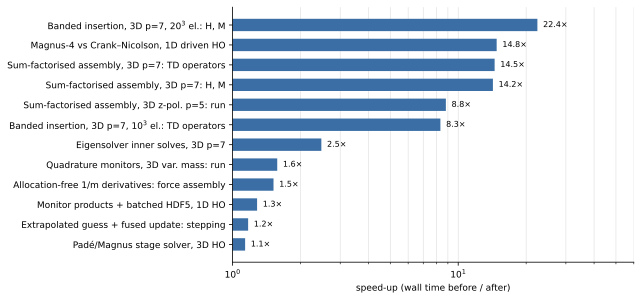
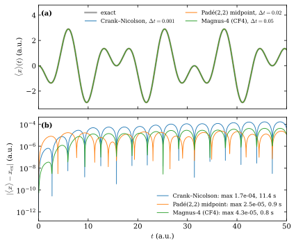

Performance
This page summarises how TDSE-Z spends its time, the optimisations of the
assembly, eigensolver, propagation and output paths, and the measured effect of
each. None of them changes a computed result beyond floating-point rounding or
the linear-solver tolerance; Effect on accuracy lists the checks. The complete
measurements, including the alternatives that were tried and not adopted, are in
PERFORMANCE.md in the repository root.
Timings are wall times from the TIMING SUMMARY printed at the end of every run (maximum over ranks), measured on one workstation (Apple M4 Pro, 8 performance cores) with 2-8 MPI ranks. Cluster scaling is not covered here.
Overview


Fig. 14 Measured speed-ups of individual optimisations (wall time before divided by wall time after, logarithmic scale). The test cases are those of Table 12.
Optimisation |
Test case |
Before |
After |
Gain |
|---|---|---|---|---|
Banded insertion of element matrices |
3D, \(p=7\), \(20^3\) elements, 4 ranks: \(\mathbf H,\mathbf M\) |
258 s |
11.5 s |
22x |
Fourth-order propagator ( |
1D driven oscillator, equal accuracy class |
11.4 s |
0.77 s |
15x |
Sum-factorised assembly |
3D, \(p=7\), \(10^3\) elements: time-dependent operators |
464 s |
32 s |
14x |
Sum-factorised assembly |
3D, \(z\) polarisation, \(p=5\): whole run |
62.6 s |
7.1 s |
8.9x |
Eigensolver inner solves and fallback |
3D, \(p=7\), 15.6k DOFs, 4 states |
49.0 s |
19.8 s |
2.5x |
Monitor expectation values at the quadrature points |
3D varying mass, discrete acceleration, 50 steps: whole run |
142 s |
90 s |
1.6x |
Allocation-free \(1/m\) derivatives |
3D, \(p=4\), varying mass: force assembly |
28.1 s |
18.5 s |
1.5x |
Monitor products and batched HDF5 writes |
1D oscillator, \(5\times10^4\) steps |
15.8 s |
12.3 s |
1.3x |
Extrapolated initial guess, fused stage update |
3D, \(p=3\), 32k DOFs, |
3.40 s |
2.90 s |
1.2x |
Linear solves of the propagation
The semi-discrete equation is
with overlap matrix \(\mathbf M\), field-free Hamiltonian \(\mathbf H_0\) (kinetic, potential and, when enabled, the CAP) and dipole matrices \(\mathbf D\). Every propagator solves systems of the form \((\mathbf M + g\,\mathbf H)\,\mathbf y = \mathbf b\) with GMRES [Saad1986], right-preconditioned so that the stopping test (relative residual \(10^{-12}\)) applies to the true residual, and restricted additive Schwarz [CaiSarkis1999] with ILU(0) on each subdomain, built once and reused [PETSc]. A solve that needs more than twice the iterations of the first solve after the last build (plus five) triggers a rebuild, which keeps strongly driven runs convergent.
The preconditioner does not affect the result: against an exact LU solve the
2D test propagation differs by at most \(1.3\times10^{-11}\) (dipoles). Of
the preconditioners available in PETSc and PetIGA, ASM/ILU(0) is the fastest on
one node; geometric and algebraic multigrid need fewer iterations but more time
per step, and the PetIGA element and basis-function block preconditioners
(igaebe, igabbb) do not converge on their own (Time Propagation).
Fourth-order propagators
pade22 and magnus4 apply the (2,2) Padé approximant of the step
exponential, which factorises into two Cayley-type stages,
with \(g_{1,2} = h(\mp\sqrt3 + 3i)/12\). magnus4 is the
commutator-free fourth-order Magnus scheme [BlanesMoan2006] [Alvermann2011], two such
exponentials per step. Fig. 15 compares them with
Crank-Nicolson [Crank1947] on a strongly driven oscillator with an exact
solution.


Fig. 15 1D harmonic oscillator driven by \(E(t)=\cos(0.6\,t)\) (degree 7,
1200 elements, 2 ranks). (a) Dipole \(\langle x\rangle(t)\) from the
dipoles dataset on top of the exact solution. (b) Absolute error; the
legend gives the maximum error and the propagation time. Crank-Nicolson,
\(\Delta t = 10^{-3}\): \(1.7\times10^{-4}\), 11.4 s; pade22,
\(\Delta t = 0.02\): \(2.5\times10^{-5}\), 0.91 s; magnus4,
\(\Delta t = 0.05\): \(4.3\times10^{-5}\), 0.77 s. Reproduced by
docs/perf/run.sh.
The stage solver exploits the structure of Eq. (71):
Cached field-free parts. \(\mathbf B_k\) depends only on the step length and is computed once per step length.
Fused stage update. \(\mathbf A_k = \mathbf B_k + g_k s\,\mathbf E\cdot\mathbf D\) is formed in one pass over the stored values (all matrices share the sparsity structure, checked once), instead of a copy and one matrix addition per field axis.
Paired right-hand sides. Since \(\overline{g_1} = -g_2\), the right-hand side of stage \(k\) is \(2\mathbf M\mathbf x - \mathbf A_{3-k}\mathbf x\): two sparse products instead of three.
Extrapolated initial guess. Each solve starts from the stage input plus the stage increment \(\boldsymbol\delta = \mathbf y - \mathbf x\) extrapolated from the last \(q\) steps,
(72)\[\mathbf y_0^{(n)} = \mathbf x^{(n)} + \sum_{j=1}^{q} (-1)^{j-1}\binom{q}{j}\,\boldsymbol\delta^{(n-j)} ,\]so the initial residual is \(O(h^q)\); \(q = 3\) by default (
-pade_guess_order).
Case |
time stepping |
GMRES iterations per solve |
operator updates |
|---|---|---|---|
3D, \(p=3\), 32k DOFs, 40 steps, \(xy\) field: \(q=1\), copy/add update |
3.40 s |
5.51 |
0.61 s |
same, \(q=3\), fused update |
2.90 s |
4.11 |
0.35 s |
2D, \(p=4\), 14k DOFs, 100 steps: \(q=1\), copy/add update |
0.52 s |
5.01 |
0.072 s |
same, \(q=3\), fused update |
0.41 s |
3.38 |
0.050 s |
GMRES orthogonalisation is 1-2 % of a solve; the remainder is ILU triangular solves and sparse products, so iterations saved translate directly into time.
Assembly
Element matrices are sums over the tensor-product Gauss rule,
with \(c\) the quadrature weight times a coefficient (\(1/2m\),
\(V\), \(1/m\), \(x_d\), \(\partial_d V/m\), CAP, …). The
B-spline basis [deBoor2001] and the rule are tensor products, so the sum is
contracted one axis at a time (sum factorisation): with \(n = p+1\)
functions and \(Q\) points per axis the work per element drops from
\(Q^3 n^6\) to \(n^6 Q + n^4 Q^2 + n^2 Q^3\) in 3D. The contractions
are dense matrix products evaluated with the BLAS PETSc was configured with.
Element matrices agree with the point-wise kernels to
\(5\times10^{-15}\) (-tdsez_sumfact_check); this covers every operator,
including the mass-gradient corrections of the force matrices.
The assembled matrices are then inserted row by row from a dense band over each rank’s ghosted node box instead of element by element (a B-spline function couples only to functions within \(p\) positions per axis), which removes up to \((p+1)^{2d}/(2p+1)^d\) redundant insertions per entry (78 at \(p = 7\) in 3D) and their inter-rank communication.
Case |
before |
after |
|---|---|---|
\(p=7\), \(10^3\) elements, \(\mathbf H,\mathbf M\): sum factorisation |
114 s |
8.0 s |
same, time-dependent operators |
464 s |
32 s |
\(p=7\), \(10^3\) elements, \(\mathbf H,\mathbf M\): banded insertion |
12.1 s |
2.1 s |
\(p=7\), \(20^3\) elements, \(\mathbf H,\mathbf M\): banded insertion |
258 s |
11.5 s |
Monitors and output
Observables are computed and recorded at every step. Operators that are Kronecker products of 1D banded matrices (\(\mathbf M\), dipoles, and for a constant mass the velocities and \(\mathbf K\)) are applied in factorised form. Expectation values of non-separable operators,
are evaluated from \(\psi\) at the quadrature points, which gives the same
number as the matrix of Eq. (73) without storing it
(\(\langle V\rangle\), the forces, and for a varying mass
\(\langle 1/m\rangle\), \(\langle K\rangle\) and the velocities). Every
replacement is checked against the assembled matrix on the first step and used
only if it agrees to \(10^{-10}\) (observed \(10^{-15}\)); the matrix
is then freed. -tdsez_tensor_ops 0 and -tdsez_quad_obs 0 restore the
matrix products. The time series are written to HDF5 in batches (at most once
every 2 s of wall time and at the end of the run), with unchanged contents.
Eigensolver
Bound states are computed with Krylov-Schur [Stewart2002] on the shift-invert operator [Hernandez2005]. The inner solve is direct (MUMPS) in 1D and 2D and for small high-degree 3D problems, and FGMRES with ASM(1)/ILU(0) otherwise; every attempt is validated by the backward error of the eigenpairs and falls back to another inner solver on failure (Eigensolver). A degree-7 3D problem with 15.6k DOFs takes 19.8 s instead of 49.0 s, and a 2D problem with 254k DOFs 34 s instead of 64 s.
Effect on accuracy
Cached and paired stages, the fused update, sum factorisation and banded insertion are algebraic rewritings: results agree to rounding (\(\le 5\times10^{-14}\) in energies, dipoles and spectra on the test inputs).
The extrapolated initial guess changes only the GMRES starting point; the stopping test is unchanged, and results agree to the solver tolerance (dipoles \(\le 9\times10^{-11}\) relative).
Monitor shortcuts read \(\psi\) only and are used after verification; written observables agree to \(\le 8\times10^{-15}\).
Batched writes do not change any written value.
Reproducing the measurements
Each run prints a TIMING SUMMARY (phase wall times, KSP and preconditioner statistics, operator updates, HDF5 writes) and a PERFORMANCE block (DOFs, ranks, time per step). Compare configurations with the same number of ranks on an otherwise idle machine; run-to-run variation on a workstation is about 10-20 %. The propagator comparison is reproduced with
cd docs/perf
NP=2 TDSEZ=/path/to/tdsez.x ./run.sh